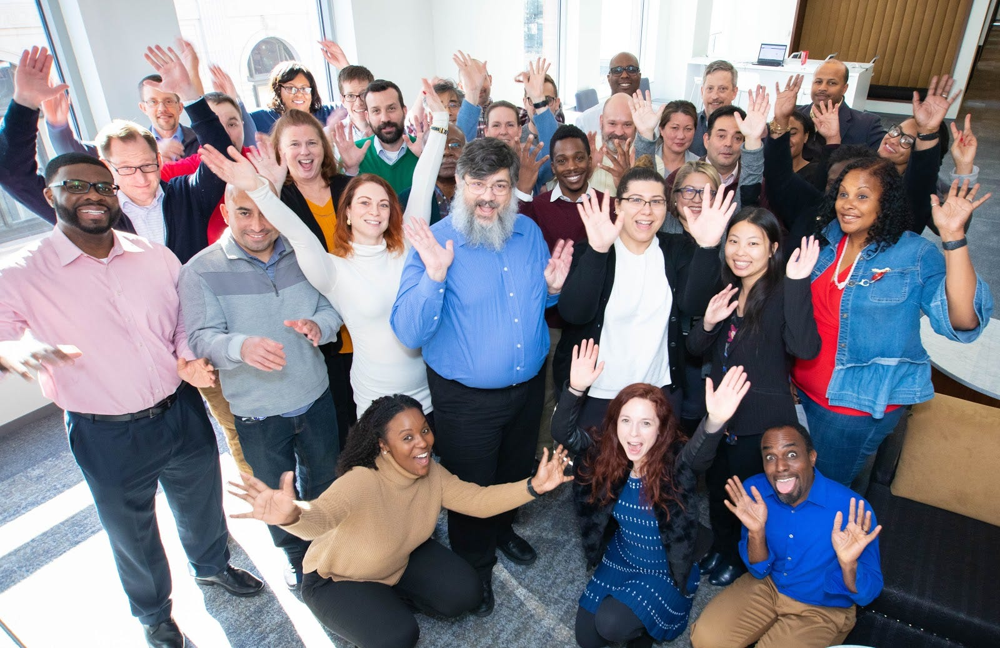
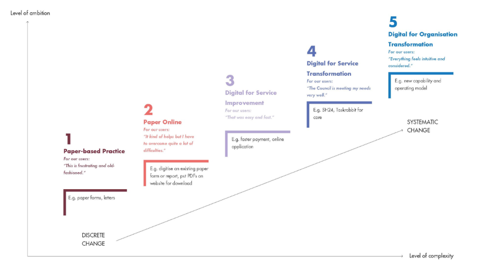
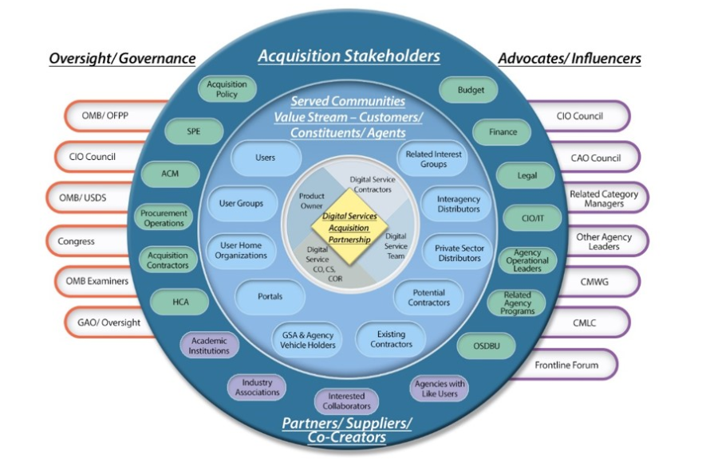

The DITAP program is a promising step to transforming gov procurement, but we still have work to do

To learn about or request DITAP training from CivicActions, visit our website.
Modernizing government services starts with procurement. Agencies can’t effectively buy the kinds of technology and services that work for today’s world if contracting officers are stuck using traditional buying practices that were developed decades ago. Fortunately, there are ways to leverage existing regulations to make procurement work better for government — if contracting personnel understand enough about modern IT practices, vendors, and services to make informed decisions.
There are ways to leverage existing regulations to make procurement work better for government.
Enter the Digital IT Acquisition Professional (DITAP) program. We recently graduated two cohorts from this training aimed at upskilling the federal acquisition workforce, and we want to share our learnings from co-developing, delivering, and reflecting on the success of the program. Our hope is that everyone involved with DITAP, from government agencies to vendors to learners, will keep looking for ways to improve the program’s impact for the acquisition community and the ultimate beneficiaries — the people who depend on their government’s ability to buy and deliver modern digital services.
How DITAP was born
DITAP was launched by the US Digital Service (USDS) in 2016 to train federal contracting officers and contracting specialists to better align digital acquisitions processes and management with the modern ways software is developed and delivered in the world today.
Many of the current government procurement practices used in digital acquisitions favor a waterfall method of software development. The DITAP program helps to educate contracting personnel about the flexibility inherent in their authorities to innovate digital acquisitions, aligning the process with the Human-Centered Design (HCD), Lean Startup, and other iterative methodologies used by Agile vendors. According to USDS co-founder Haley Van Dyck in a 2016 talk, 94% of federal government IT projects fail (late, over budget, canceled, not user-friendly, or outdated). The ultimate goal of DITAP is to increase the number and percentage of successful digital acquisitions completed by the federal government each year — resulting in smarter, human-centered services being delivered to the American people.
The ultimate goal of DITAP is to increase the number and percentage of successful digital acquisitions completed by the federal government each year.
The Office of Federal Procurement Policy (OFPP) has issued guidance requiring all contracting officers and specialists who handle acquisitions of $7 million or more to be certified through the DITAP program. In order to meet that demand, USDS and OFPP are working together to scale the DITAP program by inviting educational vendors to deliver this training.
So, how is it going?
Last year, we won two educational contracts here at CivicActions to deliver the DITAP program — one for a group from the Department of Energy (DOE), and the other for a mixed-agency group at the Federal Acquisitions Institute (FAI).
As one of the first companies approved to deliver this training, we expected to learn some lessons and adjust course along the way. Some of the challenges we faced during this training included:
Just-in-time curriculum formation
The course materials for DITAP are not yet complete, so we had to be quick on our feet (and pull a few all nighters) in order to make sure the students had access to quality materials in a timely manner.
Pandemic pivot
Just like the rest of the world, we completely revised our approach in response to COVID-19, converting a blended learning curriculum into a 100% virtual course. Meanwhile, all the course participants were dealing with extremely stressful changes in their home and work environments. They were real troopers in sticking with DITAP through the transition and graduating with honors!
Resourcing strain
We underestimated the amount of work that would be required to deliver the program successfully, resulting in stress for our small-but-mighty team of DITAP training experts who care deeply about outcomes for the learners. We documented our experiences so future teams could be equipped for balanced and healthy course delivery.

DITAP gets thumbs-up from participants
Given the challenges we faced, it was thrilling to see two cohorts successfully graduate with honors at the end of June. By the end of the program, we were able to celebrate:
- 46 newly minted DITAP alumni representing 19 different agencies
- 100% of participants who remained enrolled in the course received their certification and earned 70–80 continuing education credits
- 94% of students surveyed after the course said they would recommend it to a colleague
- CivicActions earned fully certified status as a DITAP vendor
- Participants gave appreciative feedback about the course material and delivery, including these quotes from an end-of-class survey:
“I have really enjoyed the class! Focusing on 1102s is a great idea.”
“My attendance in this class has exposed me to new material and resources to assist me in my day to day job. Thank you for this opportunity!”
“CivicActions handled the transition to virtual sessions very well.”

What we learned
We have been iterating on the curriculum and delivery of DITAP for the past two years. By sharing our lessons learned, we hope to help other mission-minded digital services companies who are interested in helping government build capacity for more successful IT acquisitions.
DITAP needs more hands on deck to get all contracting officers up to speed on modern procurement practices. If you plan to deliver this training, here are some things to keep in mind.
Invest in right-size personnel resources
In the program’s current iterative state, it is critical to understand all the work that goes into delivering DITAP well. It is not a neatly packaged product that you can just run with — rather, you should be ready to contribute as a co-developer of the training. You will need enough team members to effectively support activities like curriculum development and design, learning research, program management, contract management, in-person and virtual training, and supporting students via Slack, email, and discussion boards.
Design a mixed-agency experience
Mixed-agency cohorts seem to work better than intra-agency cohorts. People tend to speak more honestly about challenges and creative solution ideas in group settings when they’re not surrounded by co-workers and managers — plus, they can learn more from peers at other agencies who are working on similar problems (cross-agency pollination and innovation). We also observed in intra-agency cohorts that people were sometimes assigned to the training program who didn’t know what DITAP was for and didn’t want to participate.
If you must run a cohort of people all from one agency, try to avoid including people from the same management chain (which creates limiting classroom dynamics) and instead recruit people from across the agency that don’t know one another.
Choose the best LMS for your program
We used the Learning Management System (LMS) in which the DITAP pilot was created, but ran into several challenges with Open EdX, both for the students and for us as facilitators. Conducting an LMS analysis against the needs of the users and the program could help to ensure the most effective delivery of information.
Whatever LMS you use, it’s a good idea to have LMS development resources on your team to handle any troubleshooting or development needs that may arise mid-training. Above all, use an LMS that is SCORM-compliant which gives you the freedom to export the content to another system if needed.
Focus on the learners
This program was established to improve digital acquisitions by building the capacity of the learners — so focus on them as your primary users, and adjust to their needs that affect learning. Customize the educational experience so that specific gaps in the knowledge and skills of each cohort are addressed. For example, you can adjust capstone projects and other assignments to provide more challenge for students that have greater familiarity with the course topics, or broaden the scope for learners that are just beginning to develop those skills.
In general, the DITAP students are excited to learn and eager to help move government modernization forward. Investing in specific learner needs will increase the likelihood of the program making a difference in their agencies.
Recommendations for a better DITAP
As a mission-focused organization, we care about the delivery of accessible services to the public (citizens, immigrants, and refugees) through the digital transformation of government. DITAP is part of this effort, and it’s our responsibility to determine how this program can be better delivered for the learners, their agencies and contracts, and ultimately the public who depend on these services.
Instead of simply delivering the program, we want to retrospect on what’s going well and what could be improved so that everyone involved with DITAP (now and in the future) can better understand its impact and improve its chances of success. In the spirit of an agile culture and commitment to continuous improvement, here are some ideas that could help:
Shorten the program
Five months is a long time for a program that is primarily knowledge-based, not skills-based. It’s so long that it competes with the job responsibilities of participants, and uses all that classroom time to impart a lot of knowledge (which would be easy enough to access later via resources and materials) instead of hands-on training that would build capacity more effectively. DITAP could potentially be redesigned as a shorter learning program, distinguishing between knowledge that needs to be memorized vs. knowledge that can be accessed when needed.
Focus on skills
Another approach could be to infuse DITAP with on-the-job training, which would build skills within the students’ work context and not compete with their daily jobs as they are learning. While some new awareness and knowledge is required for acquisition professionals to start transforming digital procurements, the most meaningful value is in learning new skills — handling roadblocks, obtaining approvals, evaluating the market in new ways, and managing relationships with Agile vendors.
DITAP is still in its infancy. Future iterations should account for the fact that the problems with digital acquisitions may not lie exclusively with a lack of knowledge, but also with structural, managerial, environmental, and motivational factors. So the ideal training program would be designed in response to a learning assessment and analysis of the root causes of IT acquisition failures. Skills-based learning would definitely be a critical component.
Create a standard curriculum
Right now, each vendor that joins the DITAP trainer community receives the pilot version of the curriculum. Each vendor is allowed to make updates to the material, as long as changes are approved by USDS. This results in different cohorts of DITAP students receiving different versions of the curriculum, depending on the iterations it may already have gone through with a specific vendor.
Creating a standard, updated curriculum to be used by anyone delivering the program will ensure a more consistent experience across years and across vendors. It would also allow for better analysis of assessment results and post-program evaluation (activities that are not currently part of DITAP but may be added with future efforts to more closely track program success).
Measure the actual impact
In education evaluation theory, one way to measure the success of a training effort is the four Kirkpatrick Levels of Evaluation.
Level 1: Satisfaction Did the students like the training and do they find it relevant to their jobs? This is what most for-profit IT companies focus on, as user satisfaction leads to greater adoption and revenues. However, this is not the objective of a social impact service or product. When the goal is to make a measurable difference in something like increasing digital procurement success in government, it’s important to assess what students are gaining from the course through the lens of that goal.
Level 2: Learning Did the students learn and reach the course objectives in the training environment? This measurement shows that students retained enough knowledge to pass tests in the classroom, which DITAP endeavors to measure through evaluations during the program.
Level 2.5: Learning on the Job This isn’t an actual level on the Kirkpatrick model, but it’s important to note there is a difference between learning in a class environment and learning in the real life context. Educational research has shown that cognitive development is influenced by cultural contexts (this includes work culture). According to the research, a person who has learned a skill in one environment may actually require more training to learn the skill in a different context.
Well designed approaches seek to recreate the interactive dynamics, actors, and challenges of the learners’ everyday workplace — or have them actually learn on-the-job — so that knowledge is acquired and skills are practiced in the same ways they will be used. Right now, the DITAP program does not focus on an integrative learning process that increases the likelihood of knowledge and skills transfer to new contexts.
Level 3: Behavior change Are the behaviors of students changing in the workplace and transforming how they do their jobs? This is where skills-based learning would go a long way toward equipping procurement folks with practical toolkits that they can use to actually change the way they work, for the long term.
Level 4: Results This is where we measure organizational and social impact. For instance, is the percentage of failed digital acquisitions decreasing? This is hard to measure, especially since there can be improvement in government procurement as a result of other efforts (not just DITAP).
Levels 1–2 are currently measured in the DITAP program to some extent, and we feel confident that most learners will be better equipped to become leaders for change when they graduate from the program. But as we seek to evaluate the true effectiveness of DITAP, it would help to invest in post-program evaluation, following students beyond their classroom experience to find out what’s working and what needs to be improved in the training. The ultimate goal is not classroom learning — it is measurable improvement in IT acquisitions in government to provide helpful digital services for the public and make better use of taxpayer dollars.
DITAP: A stepping stone to digital transformation
The great news is that there is an entire digital transformation movement happening in the federal government (and state and local governments, too). From innovation labs to fellowships and communities, agencies are moving slowly but surely towards better procurement models through the empowerment of public servants. Examples of these efforts include:
- Procurement Innovation Lab (Department of Homeland Security)
- CTO IDEA Lab (Department of Health and Human Services)
- Presidential Innovation Fellows (GSA’s Technology Transformation Services)
- Acquisition Gateway (General Services Administration)
- Digital.gov (Communities of practice in government)
- Centers of Excellence
- USDS and 18F
The DITAP program is one piece in that huge array of initiatives aimed at improving federal digital services and products, and we are honored that we have the opportunity to work on and help improve it.
The DITAP learners we have met are inquisitive, bright, and eager to learn more to improve their jobs as well as the experience of all acquisition teams for the benefit of the public. With an improved and positively impactful DITAP program that measures impact and adjusts accordingly, DITAP alumni will help shape a future in which government works better and smarter for people in the digital age.
Need DITAP training at your agency? Find out more here.